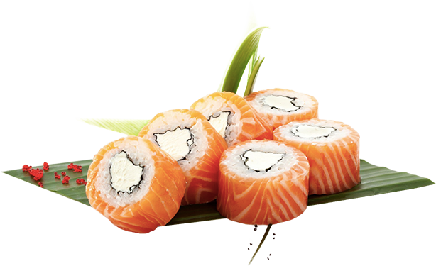
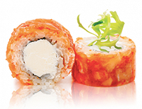
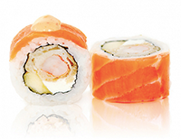
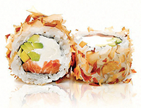
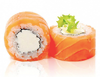
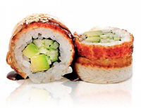
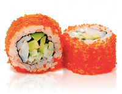
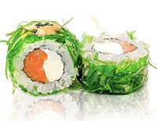
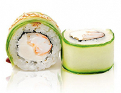
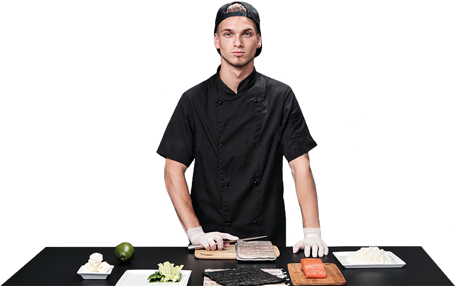

Отменные суши и роллы в Super Sushi

Выберите свои суши или роллы

Кайджи маки
Лосось, морской окунь, сливочный сыр, икра летучей рыбы, соус Терияки

Бали маки
Копченый лосось, креветка в темпуре, манго, сливочный сыр, соус Спайси

Бонито маки
Лосось, сливочный сыр, авокадо, стружка тунца

Филадельфия маки
Лосось, сливочный сыр

Киото маки
Угорь, авокадо, огурец, соус Унаги, кунжут белый

Эби Калифорния маки
Креветка, авокадо, огурец, майонез, икра летучей рыбы

Вакамэ маки
Лосось, сливочный сыр, водоросли маринованные, соус Ореховый, кунжут черный

Эдо маки
Креветка в темпуре, сливочный сыр, огурец, соус Терияки, кунжут белый
Для вас готовит наш лучший сушист Иван
Роллы и суши, которые вы у нас заказываете, делаются профессиональным сушистом c 5-летним стажем Иваном Лазерко, который постоянно подтверждает и улучшает свою квалификацию, совершенствует рецептуру и ассортимент нашего суши-бара, прелагая вам новые и интересные сочетания вкусов.
Читайте подробнее о наших суши и роллах
